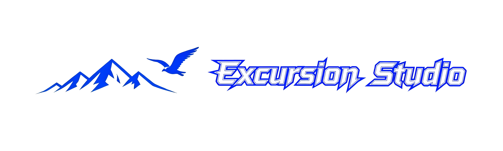

Current Time:
Click following to enter our flagship products:
Excursion Studio Personal Homepage (ESPH)Note: This studio homepage is under construction, with studio owner Yuanxing (me) thinking of what style is suitable for this page.
If you have any suggestions, please contact me at conshein_yuanxing@outlook.com.
Apart from ESPH and ESRPP, I intend to create a more interactive and fashionable page, i.e. studio platform,
in order to make pretty comfortable environment for visitors being interested in our studio's work, facilities, and products.
Certainly, it may take me several years to finish this project.
As above points mention, I have no enough budget and professional level to build such well-equipped studio,
so please let me find an employer and keep my academic route going first, because I have even not obtain MSc. Degree yet.
But building a studio is my dream, I would try my best to make it!
In short, please stay tuned! During this route, I could gradually fill with content in this page!